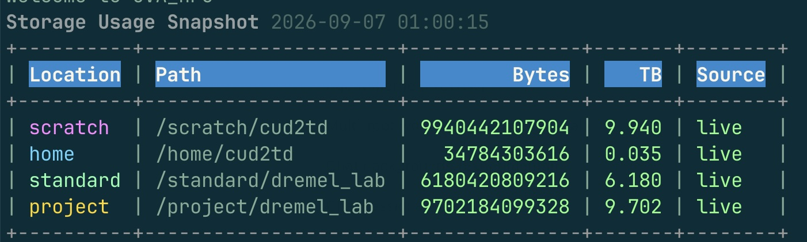

Rivanna Storage Options
Storage locations, I/O performance, and cleanup/reporting scripts for Dremel Lab
Rivanna Storage Options
A reference for the storage locations available to Dremel Lab members on UVA’s Rivanna HPC, when to use each one, real measured I/O performance, and the scripts we run to keep /scratch clean and to track how full each location is.
Status: Work in progress — this guide will be revised as we gather more data and scripts. Feedback welcome.
Overview
Rivanna exposes several distinct storage locations, each with different quotas, sharing rules, snapshot policies, and (critically) very different I/O performance. Picking the wrong one for a workload is a common source of “why is this pipeline so slow” reports — see Key Points below.
Storage Locations
| Storage Location | Size/Quota | Shareable | Snapshots | Automatic Purge | Recommended Use |
|---|---|---|---|---|---|
/home |
200 GB | No | Daily, 1 week | No | Code, scripts, documents |
/scratch |
10 TB | No | None | Files inactive for 90 days deleted | Active HPC computations |
/project |
10 TB leased | Yes | Daily, 1 week | No | Shared HPC project data |
/standard |
10 TB leased | Yes | None | No | Long term research storage |
Dremel Lab’s shared paths follow this pattern: - /project/dremel_lab — shared, fast, holds pipeline code, reference genomes/indices, and shared tooling (e.g. /project/dremel_lab/scripts) — not per-run pipeline I/O, which goes on /scratch - /standard/dremel_lab — shared, slow, used for long-term archival of raw data and finished results - /scratch/<username> — per-user scratch for transient pipeline working directories
Pipeline Data Workflow
Given the quota/sharing/performance tradeoffs above, Dremel Lab pipelines (HAROLD, Chroma2, etc.) follow a consistent storage pattern rather than reading/writing any one location for everything:
/standard/dremel_lab /project/dremel_lab
(raw FASTQs, archival) (pipelines, reference genomes/indices — shared, fast)
│ │
│ Globus transfer │ used throughout
▼ ▼
/scratch/<user> ◄── manifest points here ──► pipeline run (workdir on scratch)
│
│ on completion
▼
S3 (final results — hot/cold tiers)- Raw FASTQs live on
/standard— write-once, read-rarely archival storage; this is where sequencing data lands and stays long-term. - Pipeline code and references live on
/project— Snakemake/Nextflow pipelines, conda/mamba envs, reference genomes and indices are shared, need fast I/O, and are reused across many runs, so they belong on/project, not/standard. - Before a run, FASTQs are Globus-transferred from
/standardto/scratch/<user>— this makes a fast working copy so the pipeline never has to read raw input at/standardspeeds (see I/O Performance below). - The sample manifest/samplesheet points at the
/scratchcopy, not the/standardoriginal — this is what actually puts the pipeline on the fast path; a manifest still pointing at/standardpaths would silently reintroduce the 15-20x slowdown. - The pipeline’s working directory (
WORKDIR, intermediate/temp files) is also on/scratch—/scratchhas the room (10 TB) and speed for heavy read/write during a run, and its 90-day auto-purge pluscleanup_uuid_dirkeep it from filling up with stale run artifacts. - On completion, final results are transferred to S3, not back to
/standard. Both HAROLD and Chroma2 run an optional post-run pipeline stage (push_to_s3: trueinconfig.yaml) thataws s3 syncs curated outputs from/scratchtos3://dremel-lab-bucket/_HTS/<PIPELINE>/<sample_set_name>/...— verifying the transfer by checksum before deleting anything local. If the transfer fails or can’t be verified, the local/scratchcopy is left in place and the pipeline raises an error rather than silently losing data. Storage class is assigned per file type to control cost: large, rarely-touched alignment files (BAM/BAI) go to Glacier (cheapest, restore takes hours — see Understanding S3 Storage Classes in the S3/Globus guide); everything else (QC reports, count matrices, bigwigs/bigbeds, peaks, configs) goes to Glacier Instant Retrieval for near-immediate access. This keeps finished outputs off Rivanna’s leased/quota’d storage entirely, while remaining downloadable via Globus.
Why not run pipelines directly off /standard or /project? /standard is far too slow for active I/O (see below). /project is shared and leased (limited, costs money to expand) — it’s kept for code and references, not bulk per-run working data, so heavy pipeline I/O doesn’t compete with everyone else’s shared tooling or eat into the lease.
I/O Performance: /standard vs /project
This started as a conda env list command hanging for minutes on end. The suspects were slow I/O, or a conda environment that had grown too large/old for conda to index quickly — the fix that actually cleared up the hang was switching the login shell from zsh to bash. But while chasing it down, we benchmarked raw filesystem throughput on /standard vs /project (and $HOME as a baseline) directly with dd, and the results were dramatic enough to document independently of the original conda issue.
Test: dd with bs=1G count=1 and oflag=direct/iflag=direct (bypasses page cache, so this reflects real filesystem throughput).
| Operation | Path | Time (s) | Speed |
|---|---|---|---|
| Write | /standard/dremel_lab/ |
12.2573 | 87.6 MB/s |
| Write | /project/dremel_lab/ |
0.5856 | 1.8 GB/s |
| Write | $HOME/ |
0.8339 | 1.3 GB/s |
| Read | /standard/dremel_lab/ |
15.0694 | 71.3 MB/s |
| Read | /project/dremel_lab/ |
0.8339 | 1.3 GB/s |
| Read | $HOME/ |
0.8784 | 1.2 GB/s |
Takeaway: /standard is roughly 15-20x slower than /project or $HOME for both reads and writes. This makes sense given /standard isn’t designed for active I/O (no snapshots either — see table above), but it means: - Never point active pipeline WORKDIR/temp directories at /standard - Never run tools (e.g. conda/mamba envs) directly out of /standard - Use /standard only for data that is written once and read rarely (long-term archival) - Stage data to /project or /scratch before compute-heavy read/write steps, then move final results back to /standard for archival
Scratch Cleanup
/scratch auto-purges files inactive for 90 days, but pipeline runs (Snakemake .snakemake work dirs, tool temp dirs, etc.) commonly leave behind UUID-named temp directories well before that. We run a scheduled cleanup script for these:
cleanup_uuid_dir — scans /scratch/$USER and /scratch/$USER/tmpdir for directories named as UUIDs (^[0-9a-fA-F]{8}-...) that are older than 10 days, reports total space that would be freed, and deletes them when run with --delete (dry-run by default).
Location on Rivanna: /project/dremel_lab/scripts/bin/cleanup_uuid_dir
cleanup_uuid_dir # dry run — reports what would be deleted
cleanup_uuid_dir --delete # actually deletesScheduled nightly via Slurm scrontab (see config/scrontab.conf):
0 0 * * * /project/dremel_lab/scripts/bin/cleanup_uuid_dir --deleteStorage Usage Reporting
Two companion scripts track how full each storage location is over time:
storage_usage — measures /scratch/$USER, $HOME, /standard/dremel_lab, and /project/dremel_lab in parallel using dust (run nice/ionice’d so it doesn’t hog I/O), and appends a timestamped row per location to $HOME/storage_usage.tsv. Falls back to the last cached measurement for a location if a scan times out (default 600s) or fails, so the log always has a value even when a directory is too large to fully walk in time.
Location on Rivanna: /project/dremel_lab/scripts/bin/storage_usage
Run nightly via scrontab:
0 1 * * * /project/dremel_lab/scripts/bin/storage_usagestorage_usage_report — reads storage_usage.tsv and prints a colorized table of the latest measurement for a given day (defaults to today), color-coding NA/failed measurements and marking cached (stale) values distinctly from live ones.
Location on Rivanna: /project/dremel_lab/scripts/bin/storage_usage_report
storage_usage_report # today's snapshot, from $HOME/storage_usage.tsv
TARGET_DATE=2026-09-01 storage_usage_report # a specific dateExample output:

In a terminal, each Location row is color-coded (scratch/home/standard/project), and the Bytes/TB/Source columns are colored green for a live measurement, yellow for a cached (stale) fallback, and red for NA/failed — so a scan at a glance shows which locations are running low on quota and whether the numbers are fresh.
All three scripts live under /project/dremel_lab/scripts/bin on Rivanna, and are made available on $PATH to every dremel_lab group member who sources .sh_common in their ~/.bashrc:
source /project/dremel_lab/scripts/.sh_common(see the scripts repo README) — once sourced, you can just run cleanup_uuid_dir, storage_usage, or storage_usage_report from anywhere without the full path.
Finding What’s Eating Your Space with dust
storage_usage tells you a location is, say, 90% full — but not which folder inside it is the actual culprit. For that, use dust (the same tool storage_usage runs under the hood) instead of the classic du -sh *.
du walks every single file one at a time, which on a shared, high-latency filesystem like /scratch or /standard can take many minutes (or longer) to scan a busy directory — and at the end you still just get a flat, unsorted wall of numbers you have to eyeball to find the big one. dust walks the same files but in parallel and stops early once it has enough info to rank folders by size, so it finishes far faster on the same directory — and it hands you the answer already sorted biggest-first with a little bar next to each folder, so the space hog jumps right out at you instead of you having to scroll and compare numbers yourself.
Location on Rivanna: /project/dremel_lab/cargo/bin/dust (just dust on your $PATH once you’ve sourced .sh_common — see above)
Example command:
dust --depth 2 --only-dir --full-paths --limit-filesystem /scratch/$USER/What each flag does, in plain terms:
--depth 2— Only look 2 folders deep. Left unlimited,dustwill crawl every subfolder all the way down, which is slow and buries you in results you don’t need yet. Depth 2 gives you a quick “top of the iceberg” view — you can always point it deeper into whichever folder turns out to be the problem.--only-dir— Only show folders, not individual files. Right now you’re hunting for which directory is huge, not staring at every file in it — that’s the next step, once you’ve narrowed it down.--full-paths— Print the entire path (e.g./scratch/cud2td/HAROLD_run_2026/tmp) instead of a shortened name. You’ll want to copy that path straight into acdorrm -rf— not guess where it actually lives.--limit-filesystem— Don’t wander off onto a different mounted filesystem while scanning./scratch,/home,/project, and/standardare all separate filesystems; without this flagdustcan follow a symlink or mount point onto a totally different (and much bigger, or much slower) filesystem, which either takes forever or gives you misleading numbers./scratch/$USER/— The folder to scan.$USERjust fills in your own username, so this points at your own scratch directory.
How to actually use it:
- Run the command above.
dustprints your biggest subfolders (2 levels deep), each with a bar showing how much space it takes relative to the others.- See a huge folder?
cdinto it and rundustagain (or drop--only-dirto see individual files) to zoom in on exactly what’s inside. - Once you know what’s safe to remove — old pipeline temp dirs, leftover
.snakemakework directories, duplicate FASTQs, stray core dumps — clean it up yourself, or letcleanup_uuid_dirhandle the UUID-temp-dir case automatically.
Getting HPC-Specific Help from Research Computing
Not every storage problem is something Dremel Lab’s scripts or the lab PI can fix. Filesystem outages, quota increases, mount/permission errors, and Rivanna-wide performance issues are owned by UVA Research Computing (RC), not the lab — for those, go straight to RC support rather than #dremellab.
Before filing a ticket: check the System Status page — your issue might already be a known, in-progress incident.
How to open a ticket:
- Email (preferred by the lab): hpc-support@virginia.edu — quicker to write, keeps a thread you can reply on, and RC turns it into a ticket automatically. This is Dremel Lab’s default way of reaching RC; use it unless you have a reason to use the form instead.
- Web form: forms.rc.virginia.edu/form/support-request/ — set Support Category to HPC (or Storage for a quota/filesystem-specific issue), then fill in “Brief description of your request” and “Details of your request” (the form just says to “provide as much detail as possible” — see below for what that means in practice)
What to include so it doesn’t bounce back asking for more info:
- Full path of the affected storage location (e.g.
/scratch/cud2td,/standard/dremel_lab) - The exact error message or command output — not a paraphrase
- When it happened (date/time), and whether it’s reproducible
- Group/allocation:
dremel_lab - Slurm job ID, if it happened during a job
Less urgent, non-broken questions: RC also holds weekly office hours — Tuesdays and Thursdays — a good fit for “what’s the right way to do X” questions that aren’t worth a ticket.
Key Points
/standardis 15-20x slower than/projector$HOMEfor I/O — archival only, never active compute/projectholds shared pipeline code, references, and tooling — fast and shared, but per-run pipeline I/O (workdirs, temp files) belongs on/scratch, not here/scratchauto-purges after 90 days, butcleanup_uuid_dirproactively removes stale pipeline temp dirs after 10 daysstorage_usage+storage_usage_reportgive a daily, per-location usage snapshot — check before a large job to avoid quota surprises- When a location is full, run
dustyourself to drill down and find which folder is the actual culprit - Filesystem/quota/outage issues go to HPC Support (hpc-support@virginia.edu, our preferred contact method), not
#dremellab